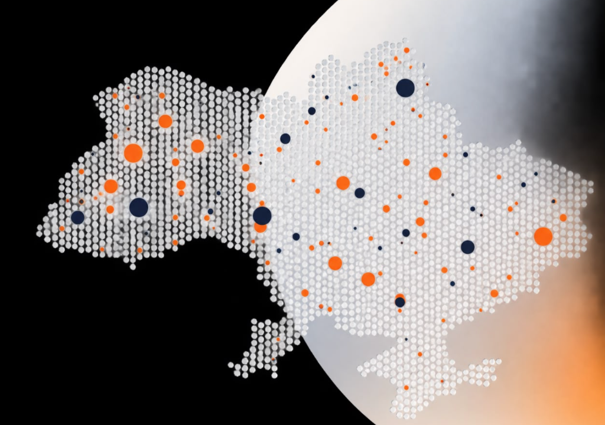

Понад 300 учасників із 60 громад зібралися у Києві, щоб обговорити інструменти участі мешканців, роль ОСН у відновленні та нові підходи до бюджету участі.
Форум відкрили представники Асоціації та партнерів. Упродовж двох днів працювали шість тематичних секцій, а ресурсні центри мережі презентували практики своїх регіонів.
Що обговорювали
- Оновлення статутів громад з урахуванням воєнного стану.
- Механізми залучення внутрішньо переміщених осіб до життя громади.
- Цифрові інструменти участі: е-петиції та е-консультації.